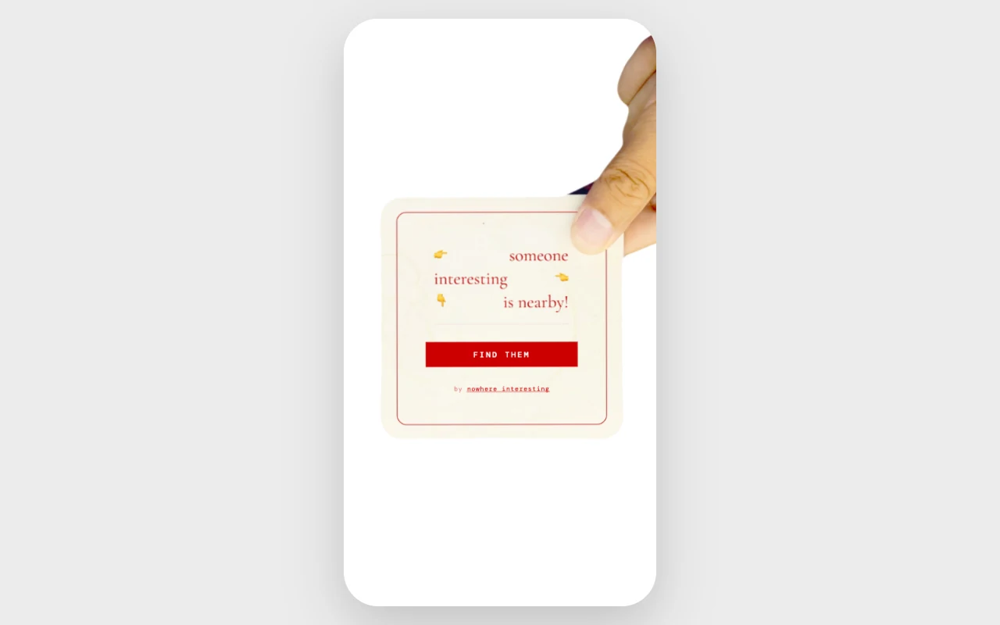

someoneinteresting.online
- Organization
- Nowhere Interesting
- Role
- Independent designer & developer
- Collaborators
- Grace Nakahara · hand model
- Duration
- 2026
Someone Interesting is a mobile-web experiment that points toward the nearest other person using it. A photographed hand gives direction and changes gesture as the distance closes. There are no profiles to browse or messages to exchange.
I conceived, designed, and built the app through my studio, Nowhere Interesting. I owned the interaction model, interface, photography, motion system, writing, and real-time implementation. Grace Nakahara contributed as a hand model.
The question was whether a small amount of information could give strangers a reason to approach each other. The result is a working prototype; its effect on real-world encounters still needs field testing.
Premise
Direction as an invitation
Proximity interfaces often ask people to make decisions from a map, a photograph, or a profile. I wanted to explore an interaction that began with curiosity about someone nearby, before either person had a biography to evaluate.
I chose to show one direction instead of a list of people. The app selects the nearest active participant and gives the user a bearing. The interface offers enough information to move, while leaving the encounter itself unresolved.
I retained a distance readout so someone could judge whether approaching was practical. As they enter the closest range, that number gives way to a simple nearby message. The goal is to support a decision to approach, not prescribe a route.

Experience
From pointing to recognition
The hand carries the main interaction. It points toward another participant, changes gesture as the distance closes, and forms half of a heart at close range. I used familiar gestures to make the progression readable without introducing a separate set of status icons.
Two photographed hands give the experience a counterpart. On joining, a session receives the opposite hand from its nearest participant when that information is available. This creates a visual relationship between two screens without introducing an avatar or profile.

The interaction sequence
The primary path moves from an invitation to orientation, approach, and a shared arrival state. The diagram distinguishes being nearby from the separate attempt to confirm a meeting.
Location denial blocks the main experience; an unavailable compass uses cardinal directions. The current no-peer branch uses a simulated participant, so this diagram describes the real-participant path rather than that demo fallback.
- 01 · Accept the invitation“find them” starts the sensor requests
- 02 · Locate a participantNearest active person → bearing and distance
- 03 · Follow the handDirection and gesture respond to proximity
- 04 · Enter nearby modeBelow 60 m → heart gesture and nearby copy
- 05 · Confirm arrivalMutual audio detection → paired heart and tally
A shared arrival
The ending extends across two screens. Each hand forms half of a heart; the app attempts to confirm arrival through mutual audio detection before showing the paired state. I wanted the closing gesture to give both people a reason to look up from the interface.
Entering the nearby range and meeting someone are different events. The heart introduces the possibility of an encounter; the detection sequence is an experimental attempt to recognize it.
Video · Placeholder
The complete two-person experience
Capture a staged walkthrough with two real devices: invitation and permissions, following the hand, entering nearby mode, audio confirmation, and the paired ending. Keep both screens visible at arrival. Label the walkthrough as staged and identify any simulated behavior; retain an unsuccessful attempt if detection fails.
Design and motion
From instrument to hand
The first prototype used a compass arrow. I then explored instrument and radio interfaces, where changing device states communicated proximity. Those directions established the behavior, but made the screen feel like a tool for locating a signal.
I chose a photographed hand to connect direction to a familiar human gesture. Pointing could guide the approach, while the same hand could change pose to acknowledge someone nearby. That choice introduced a motion challenge: the transitions had to stay coherent as live location readings changed.
Image · Placeholder
Early direction → selected interface
Place an original compass or radio study beside the photographed-hand interface at the same distance and bearing. Annotate the directional cue, proximity feedback, and change in character. Use original artifacts; label any reconstructed study.
A photographed interface
I treated the hand as the primary interface element. Photography gives it a specific person’s texture and proportions; the open background keeps the gesture legible as it rotates.
I produced twelve animation clips for each hand, covering held poses and the transitions between them. Working directly with the photography and playback let me refine the interface as a moving image.
Motion behavior
Direction and proximity have different jobs. Rotation tells someone where to turn; a change in pose communicates that the distance has changed. I kept those signals independent so a new bearing would not interrupt a gesture.
Loops hold each pose, transition clips connect them, and eased rotation softens changes in heading. Four distance bands limit pose changes to meaningful thresholds. Below 60 metres, the hand enters its nearby gesture; that threshold does not confirm a meeting.
Video or annotated sequence · Placeholder
Turn, transition, settle
Use actual clips to show three moments: a bearing change during a loop, the transition into a closer gesture, and the transition into the heart. Mark where each clip begins and ends, how it returns to a loop, and how rotation continues. Show real playback timing; do not invent duration values.
Secondary controls
I moved how it works, privacy, and terms behind a single corner control to keep the main screen focused on the hand. I explored a bottom sheet, radial options, and fanned buttons before settling on the compact corner menu.
The closed state takes up little space; opening it reveals written labels. That keeps the supporting information available without adding another persistent panel to the directional view.
Image · Placeholder
The corner menu, closed and open
Capture the current interface with the menu closed and expanded at the same phone size. Include one original earlier version if available. Annotate label readability, placement, and the space left for the hand.
Implementation
Designing around sensors
Building the app myself made the interaction constraints tangible. I adjusted the interface around imprecise location, inconsistent compass support, and people joining or leaving during an approach.
Constraints and responses
- Location drift
- I smoothed position updates and used distance bands for gesture changes, so small GPS fluctuations would not trigger a new pose with every reading.
- Missing orientation
- When the compass is unavailable, cardinal directions provide a fallback with north at the top. A retry action lets someone attempt to restore orientation.
- Changing presence
- Disconnected and stale participants are removed from the active set. A nearest-person interface must account for its target changing during an approach; how clearly people understand that change remains a field-testing question.
Trust
Disclosure and control
I removed profiles and browsing, but kept distance so someone could decide whether an approach was practical. That leaves less information to judge another person by, which is part of the experiment and a constraint on informed participation.
The invitation precedes sensor access. The current entry action can request location, orientation, and microphone access together; I would separate those explanations and defer the microphone request until arrival. Audio confirmation adds a permission cost that the experience needs to justify.
The shared tally records reported meetings without storing a who-met-whom history. Active coordinates still reach connected clients, and nearest-person selection does not guarantee reciprocal pairing. The restrained interface should not imply anonymity or a mutual match.
Outcome
A working experiment
I took the project from an initial compass prototype to a working web app with photographed motion, real-time presence, and an experimental meeting-confirmation sequence. Designing and implementing it myself let me adjust the visual behavior alongside the sensor and network behavior that drives it.
The result demonstrates the interaction, not yet the social hypothesis. I do not have field evidence that it increases encounters or helps people feel comfortable approaching strangers. The next stage is to test that experience with participants and observe where they choose to continue, hesitate, or leave.
Two questions to test
- Do people understand and choose to participate?
- Observe what they expect before granting permissions, when they hesitate, and how they want to pause or leave. Before field testing, separate the simulated-participant demo from a clear waiting state.
- Does the guidance lead to a recognizable arrival?
- Observe turns, gesture changes, target changes, and the moment people look up. Compare audio confirmation across real devices with what actually happened between the participants.
Learning through use
The next iteration needs evidence from people using the app together. I would follow a small set of encounters from invitation to exit, then use the moments of confusion or hesitation to choose what to revise.
Field study · Placeholder
Observation → revision → follow-up
After a real session, document one specific moment: what the participant did or said, the screen or behavior involved, the resulting design change, and what happened when tested again. Include the session context. Leave this as future work until observations exist.